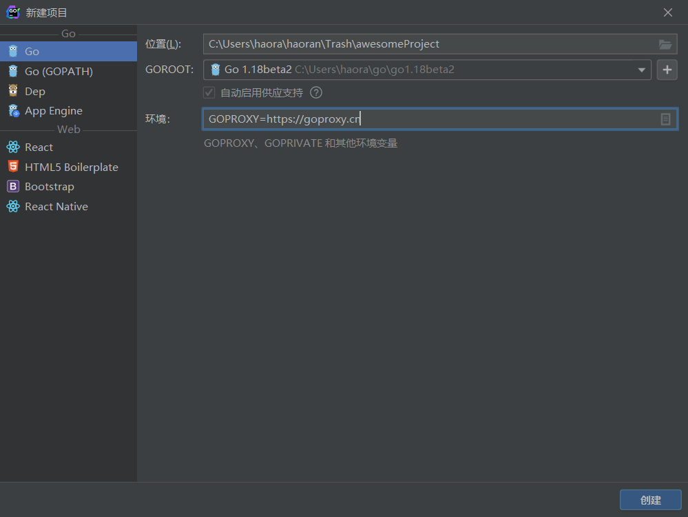

初识GIN
Table of Contents
什么是 web
关于 web
- web 是基于 HTTP 协议进行交互的应用网络
- web 就是通过使用浏览器或 APP 访问的资源
目前主要的两种 web 开发的模式
- 将完整的 html 的返回给前端
- 前端的框架自己定义了模板，后端返回 json 格式的数据，前端通过 json 文件渲染
使用 go 内置 net/http 包进行 web 开发
hello world
package main import ( "fmt" "net/http" ) func sayHello(w http.ResponseWriter, r *http.Request) { // Fprinln 往文件中写字符串 _, _ = fmt.Fprintln(w, "<h1>Hello, Goland!</h1>") _, _ = fmt.Fprintln(w, "<h2>Hello, Goland!</h2>") _, _ = fmt.Fprintln(w, "<h3>Hello, Goland!</h3>") } func main() { // sayHello 这个函数必须要接收两个参数，第一个参数是 http 包里的 ResponseWriter，表示响应，返回给浏览器的内容 // 第二个参数是一个指针，*http.Request，表示请求 // web 开发就是一个请求对应一个响应 http.HandleFunc("/hello", sayHello) // 回应与请求 err := http.ListenAndServe(":9001", nil) if err != nil { fmt.Printf("HTTP server failed, err: %v\n", err) return } }
从文件中获取前端页面
package main import ( "fmt" "io/ioutil" "net/http" ) func sayHello(w http.ResponseWriter, r *http.Request) { b, _ := ioutil.ReadFile("./hello.txt") _, _ = fmt.Fprintln(w, string(b)) } func main() { http.HandleFunc("/hello", sayHello) err := http.ListenAndServe(":9002", nil) if err != nil { fmt.Printf("http serve failed, err: %v\n", err) return } }
gin 框架简介
什么是 gin 框架
Gin 是一个 golang 的微框架，封装比较优雅，API 友好，源码注释比较明确，已经发布了 1.0 版本。具有快速灵活，容错方便等特点。其实对于 golang 而言，web 框架的依赖要远比 Python，Java 之类的要小。自身的 net/http 足够简单，性能也非常不错。框架更像是一些常用函数或者工具的集合。借助框架开发，不仅可以省去很多常用的封装带来的时间，也有助于团队的编码风格和形成规范。
Gin 框架是开源的，可以在 github 上下载其源码库，查看相应的说明。Gin 源码库地址：github.com/gin-gonic/gin
Gin 框架有一个官方网站，有对Gin相关的介绍和学习资料。官方网站：gin-gonic.com/
安装
下载并安装 Gin：
go get -u github.com/gin-gonic/gin
使用 gin 框架进行 web 开发
在 Goland 中写代码

hello world
第一个 Gin 实例：
package main import ( "github.com/gin-gonic/gin" ) func main() { // 创建一个默认的路由引擎 r := gin.Default() // GET：请求方式；/hello：请求的路径 // 当客户端以GET方法请求 /hello 路径时，会执行后面的匿名函数 r.GET("/hello", func(c *gin.Context) { // c.JSON：返回 JSON 格式的数据 c.JSON(200, gin.H{ "message": "hello world", }) }) // 启动 HTTP 服务，默认在 127.0.0.1:8080 启动服务 r.Run() }